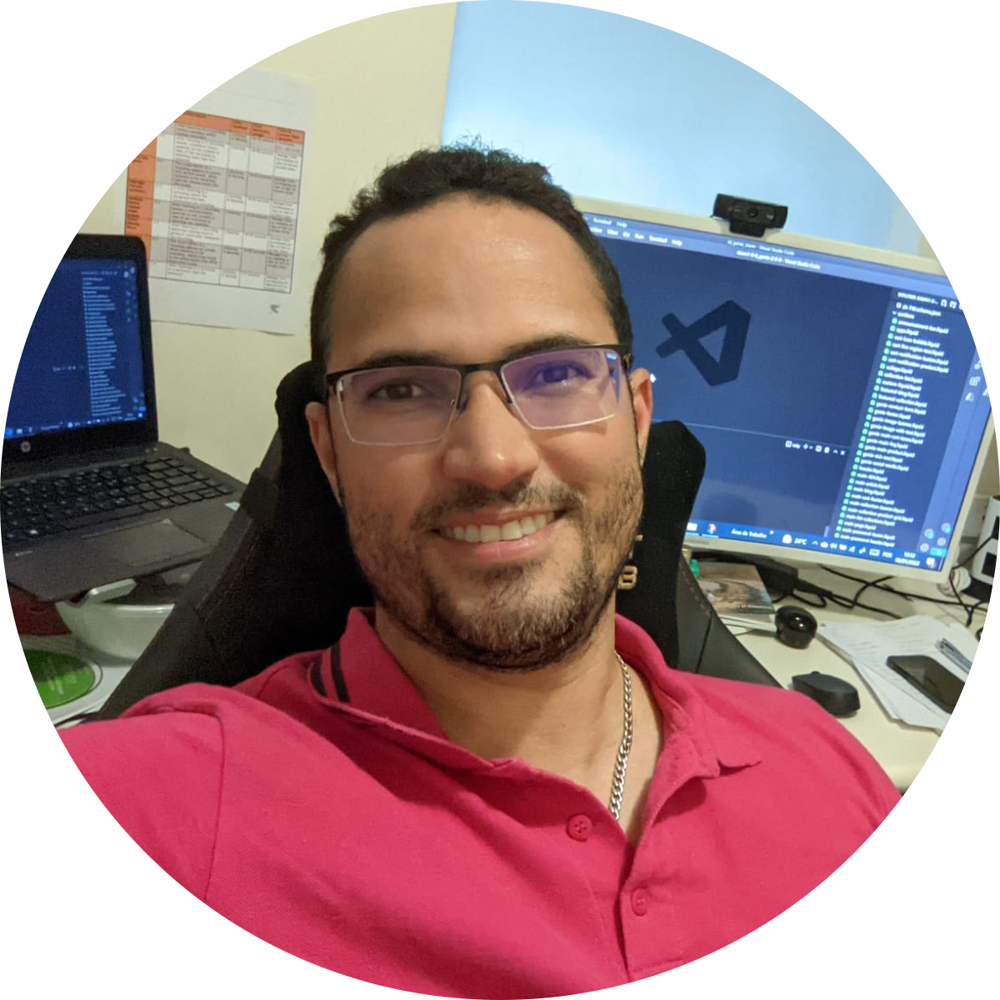

About me

My name is Renan, a seasoned software engineer and a talented master's researcher, with over a decade of professional experience in the corporate sector. In 2018, I embarked on a journey to Melbourne, Australia, with the dual purpose of advancing my academic pursuits and gaining international experience. Prior to this venture, I contributed my skills and knowledge to esteemed institutions such as the Brazilian Air Force Command, Impacta Technology College, Sant'Ana University Center, and the Federal University of Pará. Between 2021 and 2023, I received a Sponsorship Visa as a Software Engineer in Melbourne, affiliated with Image Direct. In March 2024, I relocated to a new city in South Australia: Adelaide, to broaden my horizons and explore new opportunities, where I leveraged my knowledge by contributing to projects with Laravel, serving as a Software Engineer for the renowned company Solar Reviews on a temporary three-month contract. My professional portfolio encompasses a diverse range of projects, allowing me to proficiently engage in discussions across various technological domains, including cloud computing and programming languages. I possess a strong command of object-oriented paradigms and am equally adept at working collaboratively in a team or autonomously, with or without supervision. I look forward to discussing how my extensive experience and skills can contribute to your endeavors.
I obtained my bachelor's degree in Computer Science in 2008 from the University Center of Pará (CESUPA). Subsequently, in 2009, I pursued a Postgraduate degree in Systems Analysis at the renowned Federal University of Pará (UFPA). Later, in 2012, I completed my master's degree in Computer Science from the same institution. In 2020, I embarked on a Diploma of Business program with a specialized focus on Digital Marketing at The Left Bank. This program is scheduled to be completed in 2021. Between 2012 and 2018, I held the position of First Lieutenant Systems Analyst at the Brazilian Air Force Command (FAB) in Brazil. Concurrently, I served as a Master's Lecturer at the renowned Impacta Technology College IMPACTA. Additionally, I actively participated as a speaker at various conferences and technology groups throughout Brazil. My educational and professional journey has equipped me with a solid foundation in computer science and technology, and I am eager to leverage this experience to contribute to meaningful projects and initiatives.
Curriculum vitae
My full up-to-date CV is available in Linkedin Platform. However, it is also possible see my CV (in portuguese) in Lattes Platform. A list of others informations about me can be found on the links below: